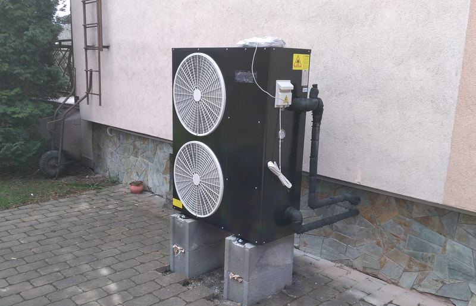
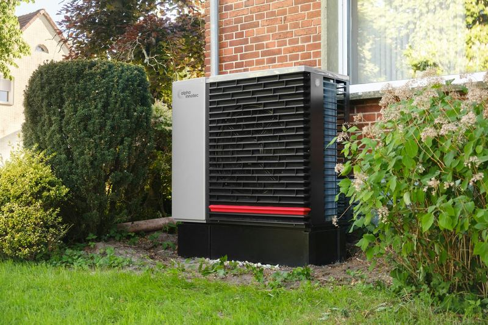
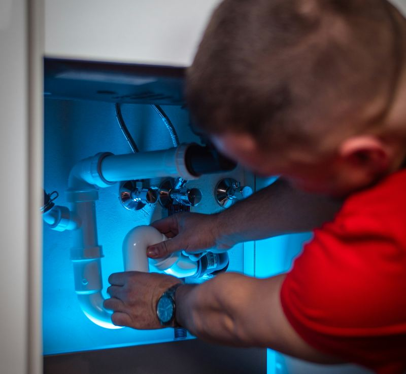
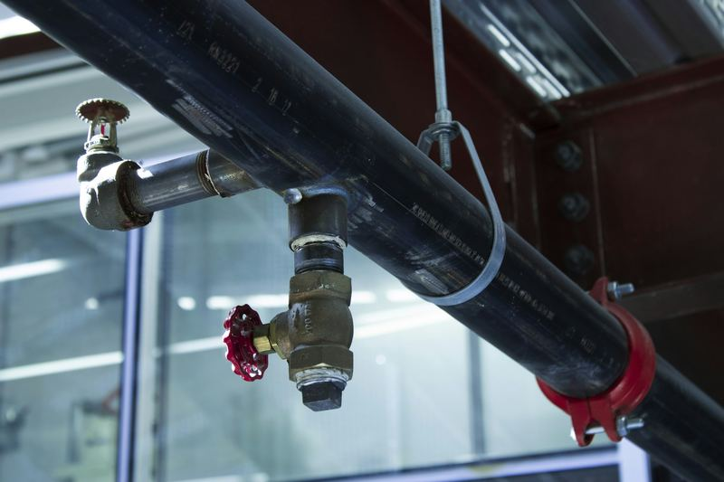
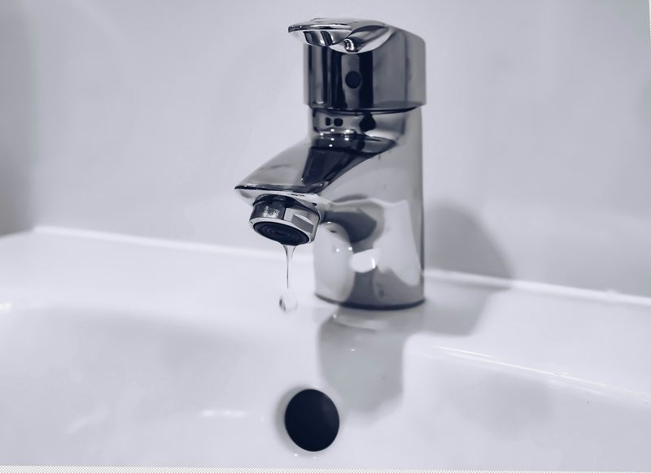
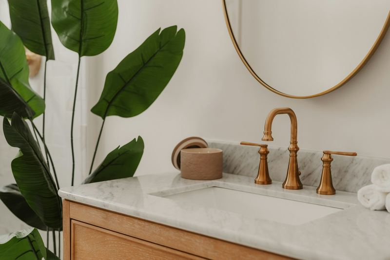

Instalatér a topenář u Opavy
Lukáš Pavelek z Hlubočce. Montuji kotle na plyn i tuhá paliva, tepelná čerpadla, rozvody vody, plynu a kanalizace i domovní vodárny.
5,0 z 10 hodnocení · 4. místo mezi instalatéry v Opavě na Firmy.cz

Co se Vám stalo?
Hned teď
Teče voda z potrubí
Zavřete hlavní uzávěr vody, bývá u vodoměru. Když voda teče k zásuvkám nebo ke spotřebičům, vypněte i jistič.
S čím Vám pomůžu
Od kotle po kohoutek. Montáž, napojení i opravy v rodinných domech a bytech na Opavsku.

Kotle
Plynové i na tuhá paliva, montáž a napojení.

Tepelná čerpadla
Montáž a napojení na topení a vodu.

Voda a kanalizace
Rozvody v koupelnách i v celém domě.

Rozvody plynu
Plynové potrubí v domě a připojení kotle.

Domovní vodárny
Vodárny a ponorná čerpadla ke studni.

WC, bojlery, myčky
Montáž a připojení spotřebičů.
5,0 z 10 hodnocení
„Jsem velmi spokojený, jak s ochotou, se solidní prací, radou i komunikací. Cena ucházející, mohu doporučit.“
zákazník na Firmy.cz
„Oceňuji ochotu, rychlost provedené práce i komunikaci.“
zákazník na Firmy.cz
„Skvělá komunikace, ochota, rychlé řešení a provedení opravy.“
zákazník na Firmy.cz
Rady z praxe
Všechny články
Co dělat, když doma cítíte plyn
Zápach plynu nepodceňujte. Pár kroků v prvních minutách rozhoduje o tom, jestli se nic nestane.
Domovní vodárna v zimě: na co si dát pozor
Vodárna u studny vydrží roky, když nezamrzne. Před zimou stačí zkontrolovat pár věcí.
Kotel na tuhá paliva, nebo tepelné čerpadlo?
Obojí umí vytopit rodinný dům. Liší se tím, kolik s ním máte práce a co od topení čekáte.
- Adresa
- Hlubočec 39, 747 69
- Kdy volat
- každý den
- Kde pracuji
- Opava a okolí